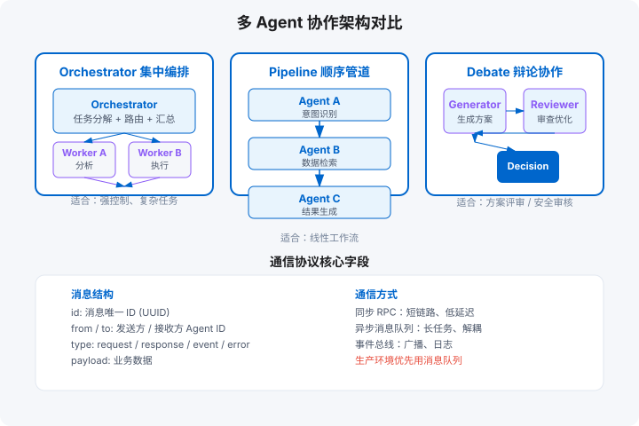

多智能体协作
角色设计 / 通信协议 / 协调模式 / 冲突解决 / 管道·辩论·层次
学习目标
- 按任务特征选择层级 / 扁平 / 动态组队三种协作架构
- 用博弈论视角预判多 Agent 冲突，并设计仲裁机制
- 判断「多 Agent 收益 > 协调成本」的边界条件
章节地图：6.1 角色设计 → 6.2 通信协议 → 6.3 协调模式 → 6.4 冲突解决 → 6.5 实际模式 → 6.6 社会模拟 → 6.7 博弈论视角 → 6.8 涌现与边界 → 本章产出。

6.1 角色设计
多 Agent 系统不是简单堆 Agent，而是按职责分工。四种基础角色：
- 专家型（Specialist）：窄领域深度能力，如「代码搜索 Agent」「SQL 生成 Agent」。一个 Agent 一个专长。
- 评审型（Reviewer）：不生产内容，只检查其他 Agent 的输出，如「安全审计 Agent」「风格评审 Agent」。
- 执行型（Executor）：调用工具、写文件、发请求。是系统的「手」。
- 协调型（Orchestrator）：负责任务分解、路由、结果汇总。是系统的「大脑」。
生产级系统通常 1 个协调型 + N 个专家/执行型，评审型按需插入。角色过多会导致通信 overhead 指数上升，建议初期控制在 3–5 个。
6.2 通信协议
Agent 之间的消息必须结构化和可追踪。最小协议包含：
id：消息唯一 ID（UUID）。from/to：发送方 / 接收方 Agent ID。type：消息类型（request / response / event / error）。payload：业务数据。priority：优先级（high / normal / low），用于抢占。ttl：超时毫秒数，防止消息堆积。
通信方式：同步 RPC（适合短链路、低延迟）、异步消息队列（适合长任务、解耦）、事件总线（适合广播、日志）。生产环境优先用消息队列，便于限流、重试、死信处理。
6.3 协调模式
| 模式 | 拓扑 | 优点 | 缺点 | 适用场景 |
|---|---|---|---|---|
| 集中式编排 | 星型 | 控制力强、易调试、路由集中 | 单点瓶颈、协调者复杂度高 | 任务明确、步骤固定 |
| 去中心化协商 | 网状 | 灵活、无单点、可扩展 | 消息风暴、冲突难解、调试困难 | 探索性任务、开放域 |
| 层次模式 | 树型 | 层级清晰、局部自治 | 跨层通信慢 | 大系统、组织架构映射 |
6.4 冲突解决
多 Agent 同时操作同一资源或对同一问题给出不同答案时，需要冲突解决机制：
- 投票：多个评审 Agent 投票，多数通过。适合评审场景。
- 仲裁：指定一个高优先级 Agent 做最终决定。适合层级系统。
- 优先级抢占：高优先级消息中断低优先级执行。适合实时系统。
- 时间戳优先：先到先得，后续覆盖。适合缓存、状态更新。
6.5 实际模式：管道、辩论、层次
三种工程上最常用的协作模板：
- 管道（Pipeline）：Agent A → Agent B → Agent C，串行处理。像流水线，适合有明确顺序的步骤。
- 辩论（Debate）：多个 Agent 对同一问题轮流发言，最后投票或综合。适合需要多角度审视的场景。
- 层次（Hierarchy）：顶层 Agent 拆解任务，分配给中层，中层再分配给底层。适合复杂项目。
6.6 社会模拟：斯坦福小镇与生成式智能体
多 Agent 最有想象力的方向不是「分工干活」，而是用智能体模拟人类社会，用于产品测试、社科实验与政策预演。斯坦福小镇（Generative Agents）是标志性工作：25 个智能体在小镇里生活，每个都有记忆、反思和计划——它们自发组织了一场情人节派对，没有一条代码写过「办派对」这个指令。
| 机制 | 作用 | 工程对应 |
|---|---|---|
| 记忆流 | 持续记录观察，按新近度/重要性/相关性检索 | 向量记忆 + 三因子打分（第 3 章） |
| 反思 | 周期性从具体观察归纳高层结论 | 定时任务：摘要 → 存入长期记忆 |
| 计划 | 把高层目标拆成小时级日程，冲突时重排 | 计划模块 + 动态重规划（第 5 章） |
落地价值：用合成用户做产品可用性测试——1000 个有人设的智能体逛你的注册流程，比 10 个真人更快发现卡点。注意伦理边界：合成人物的行为数据不能当作真实用户证据。
6.7 博弈论视角：冲突解决的形式化
6.4 节的冲突解决偏工程手段；博弈论给出更形式化的预判框架。三种经典结构覆盖多 Agent 协作的大多数困境：
| 博弈结构 | 多 Agent 场景 | 机制设计 |
|---|---|---|
| 囚徒困境 | 两个 Agent 各自藏着中间结果，都不共享 → 整体变差 | 共享收益绑定、长期关系重复博弈 |
| 协调博弈 | 多个 Agent 同时改同一份配置，格式互相覆盖 | 锁定协议、单一写入者、变更广播 |
| 公共资源 | 多个 Agent 抢同一个限流 API 配额 | 配额拍卖、优先级抢占、排队 |
核心思想：不要把希望寄托在「Agent 变聪明后自然配合」上，要在机制上让配合成为理性选择。仲裁者（6.4 节）本质上就是一种机制设计——把冲突的裁决权交给一个利益无关的第三方。
6.8 涌现行为与集体智慧：多 Agent 的边界
「三个 agent 顶一个诸葛亮」是幻觉。多 Agent 的真实收益曲线是倒 U 型：任务复杂度上升到一定程度后收益显现，但 Agent 数量继续增加，协调成本（通信、冲突、错误级联）会吞掉全部收益。
- 收益 conditions：任务可清晰分解、子任务间耦合低、需要不同领域视角（写作 + 审校 + 检索）。
- 成本信号：协调消息数随 Agent 数平方增长；单一Agent 两轮 prompt 能解决的事，多 Agent 要 8 次调用。
- 判据：先跑通「单 Agent + 好工具」，把失败 case 按「视角缺失」归类。只有当失败稳定地源于「需要另一种视角」时，才引入第二个 Agent。
动手实验
- 把你系统里的多 Agent 通信画成拓扑图：数出「为协调而产生的消息」占比。超过 30% 说明角色切分有问题。
- 用 6.7 节表格检查你的多 Agent 系统：三个博弈结构里你踩了哪个？补上对应机制。
- 找一次多 Agent 失败，问：这个问题是「视角缺失」还是「协调失灵」？后者不该用加 Agent 解决。
三大框架的多 Agent 实现对照
多智能体不是玄学，落到框架上是三种截然不同的抽象。选框架前先选隐喻，别反过来：
| 框架 | 核心隐喻 | 协作方式 | 状态管理 | 适合场景 |
|---|---|---|---|---|
| CrewAI | 剧组：角色 + 任务 | 顺序/层级委派，成员各管一段 | 框架隐式管理 | 内容生产流水线（研究→写作→审校） |
| AutoGen | 群聊：多个对话者 | Agent 之间互相发消息，可引入 human | 对话历史即状态 | 对话式协作、代码执行评审、探索性任务 |
| LangGraph | 状态机：图节点 + 边 | 显式定义流转（条件分支、循环、并行） | 显式 State + checkpointer | 流程确定的生产系统、要中断恢复/人在环 |
三者的工程哲学差异比 API 差异更重要：CrewAI 用角色掩盖控制流（写起来爽，但任务图不可视化，出问题难调试）；AutoGen 用对话统一一切（灵活，但链路长时 token 消耗和延迟都高）；LangGraph 把控制流显式化成图（学习曲线最陡，但是唯一能画出来、能单测每个节点、能持久化恢复的）。生产环境我的建议：原型期用 CrewAI/AutoGen 快速验证协作模式，定型后用 LangGraph 重写关键路径——和第 13 章的平台策略一样，先用对的隐喻想清楚，再用对的框架落地。
什么时候不要多 Agent：单个 Agent 顺序执行 30 秒内能完成的任务，上多 Agent 是净亏——协调开销、上下文拼接、错误传播都翻倍。多 Agent 的正当理由只有三个：任务真的可并行、需要不同领域的独立上下文隔离、需要不同角色互相制衡（如代码生成 vs 代码评审）。为了「看起来先进」拆多 Agent，是最常见的过度设计。
本章产出：三种协作模式的代码骨架（双语言）
下面实现一个最小消息总线，并用它演示管道、辩论、层次三种模式。
Python 版本
"""
多智能体协作骨架 —— Python
"""
from __future__ import annotations
import uuid
from dataclasses import dataclass, field
from typing import Any, Callable, Awaitable
# ---- 基础协议 ----
@dataclass
class Message:
id: str = field(default_factory=lambda: uuid.uuid4().hex[:8])
from_agent: str = ""
to_agent: str = ""
type: str = "request" # request | response | event | error
payload: Any = None
priority: int = 0 # 越高越优先
ttl: int = 5000
AgentHandler = Callable[[Message], Awaitable[Message]]
class MessageBus:
def __init__(self):
self._subs: dict[str, list[AgentHandler]] = {}
def subscribe(self, agent_id: str, handler: AgentHandler):
self._subs.setdefault(agent_id, []).append(handler)
async def send(self, msg: Message) -> Message:
handlers = self._subs.get(msg.to_agent, [])
if not handlers:
return Message(from_agent="bus", to_agent=msg.from_agent, type="error", payload="no handler")
# 简单路由：取第一个匹配 handler
return await handlers[0](msg)
# ---- 三种模式 ----
# 1. 管道：A -> B -> C
async def pipeline_example(bus: MessageBus):
async def agent_a(msg: Message) -> Message:
return Message(from_agent="A", to_agent="B", type="request", payload=f"A处理过: {msg.payload}")
async def agent_b(msg: Message) -> Message:
return Message(from_agent="B", to_agent="C", type="request", payload=f"B处理过: {msg.payload}")
async def agent_c(msg: Message) -> Message:
return Message(from_agent="C", to_agent="A", type="response", payload=f"C完成: {msg.payload}")
for id_, fn in [("A", agent_a), ("B", agent_b), ("C", agent_c)]:
bus.subscribe(id_, fn)
res = await bus.send(Message(from_agent="user", to_agent="A", payload="原始任务"))
return res.payload
# 2. 辩论：多个 Agent 轮流发言
async def debate_example(bus: MessageBus, rounds: int = 2):
opinions = ["支持", "反对", "有条件支持"]
async def debater(msg: Message) -> Message:
idx = int(msg.to_agent[-1]) - 1
return Message(from_agent=msg.to_agent, to_agent="moderator",
type="response", payload=f"{msg.to_agent}: {opinions[idx % 3]}")
for i in range(1, 4):
bus.subscribe(f"debater{i}", debater)
results = []
for r in range(rounds):
for i in range(1, 4):
msg = Message(from_agent="moderator", to_agent=f"debater{i}", payload=f"第{r+1}轮")
res = await bus.send(msg)
results.append(res.payload)
return results
# 3. 层次：顶层拆解 -> 中层分配 -> 底层执行
async def hierarchy_example(bus: MessageBus):
async def orchestrator(msg: Message) -> Message:
return Message(from_agent="orchestrator", to_agent="worker", payload=["子任务1", "子任务2"])
async def worker(msg: Message) -> Message:
tasks = msg.payload if isinstance(msg.payload, list) else [msg.payload]
return Message(from_agent="worker", to_agent="orchestrator",
type="response", payload=[f"完成:{t}" for t in tasks])
bus.subscribe("orchestrator", orchestrator)
bus.subscribe("worker", worker)
res = await bus.send(Message(from_agent="user", to_agent="orchestrator", payload="总任务"))
return res.payload
if __name__ == "__main__":
import asyncio
bus = MessageBus()
print("管道:", asyncio.run(pipeline_example(bus)))
print("辩论:", asyncio.run(debate_example(bus)))
print("层次:", asyncio.run(hierarchy_example(bus)))TypeScript 版本
/**
多智能体协作骨架 —— TypeScript
*/
import { v4 as uuidv4 } from "uuid";
// ---- 基础协议 ----
interface Message {
id: string;
fromAgent: string;
toAgent: string;
type: "request" | "response" | "event" | "error";
payload: any;
priority: number;
ttl: number;
}
type AgentHandler = (msg: Message) => Promise;
class MessageBus {
private subs: Map = new Map();
subscribe(agentId: string, handler: AgentHandler) {
const arr = this.subs.get(agentId) ?? [];
arr.push(handler);
this.subs.set(agentId, arr);
}
async send(msg: Message): Promise {
const handlers = this.subs.get(msg.toAgent) ?? [];
if (handlers.length === 0) {
return { ...msg, fromAgent: "bus", toAgent: msg.fromAgent, type: "error", payload: "no handler" };
}
return handlers[0](msg);
}
}
// ---- 三种模式 ----
// 1. 管道
async function pipelineExample(bus: MessageBus): Promise {
const agentA: AgentHandler = async (msg) => ({
...msg, fromAgent: "A", toAgent: "B", payload: `A处理过: ${msg.payload}` });
const agentB: AgentHandler = async (msg) => ({
...msg, fromAgent: "B", toAgent: "C", payload: `B处理过: ${msg.payload}` });
const agentC: AgentHandler = async (msg) => ({
...msg, fromAgent: "C", toAgent: "A", type: "response", payload: `C完成: ${msg.payload}` });
bus.subscribe("A", agentA);
bus.subscribe("B", agentB);
bus.subscribe("C", agentC);
const res = await bus.send({ id: uuidv4().slice(0, 8), fromAgent: "user", toAgent: "A", type: "request", payload: "原始任务", priority: 0, ttl: 5000 });
return res.payload;
}
// 2. 辩论
async function debateExample(bus: MessageBus, rounds: number = 2): Promise {
const opinions = ["支持", "反对", "有条件支持"];
const debater: AgentHandler = async (msg) => ({
...msg, fromAgent: msg.toAgent, toAgent: "moderator", type: "response",
payload: `${msg.toAgent}: ${opinions[parseInt(msg.toAgent.slice(-1)) - 1]}` });
for (let i = 1; i <= 3; i++) bus.subscribe(`debater${i}`, debater);
const results: string[] = [];
for (let r = 0; r < rounds; r++) {
for (let i = 1; i <= 3; i++) {
const res = await bus.send({ id: uuidv4().slice(0, 8), fromAgent: "moderator", toAgent: `debater${i}`, type: "request", payload: `第${r+1}轮`, priority: 0, ttl: 5000 });
results.push(res.payload);
}
}
return results;
}
// 3. 层次
async function hierarchyExample(bus: MessageBus): Promise {
const orchestrator: AgentHandler = async (msg) => ({
...msg, fromAgent: "orchestrator", toAgent: "worker", payload: ["子任务1", "子任务2"] });
const worker: AgentHandler = async (msg) => {
const tasks = Array.isArray(msg.payload) ? msg.payload : [msg.payload];
return { ...msg, fromAgent: "worker", toAgent: "orchestrator", type: "response",
payload: tasks.map(t => `完成:${t}`) };
};
bus.subscribe("orchestrator", orchestrator);
bus.subscribe("worker", worker);
const res = await bus.send({ id: uuidv4().slice(0, 8), fromAgent: "user", toAgent: "orchestrator", type: "request", payload: "总任务", priority: 0, ttl: 5000 });
return res.payload;
}
// 使用示例
(async () => {
const bus = new MessageBus();
console.log("管道:", await pipelineExample(bus));
console.log("辩论:", await debateExample(bus));
console.log("层次:", await hierarchyExample(bus));
})(); 本章产出
- 一个最小消息总线（MessageBus），支持订阅 / 发送 / 优先级。
- 三种协作模式的完整骨架：管道（串行流）、辩论（多轮评审）、层次（分层委派）。
- 可直接扩展：替换 handler 里的模拟逻辑为真实 LLM 调用或工具执行。